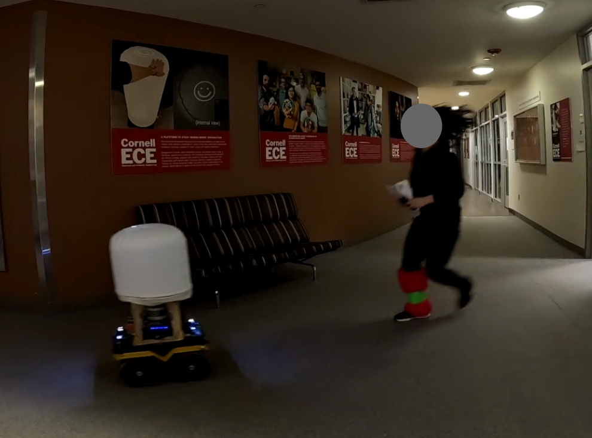
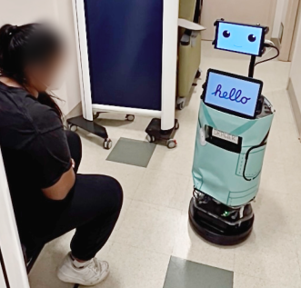

I graduated from Cornell University with a MS degree in computer science. While there, I conducted research on human-robot interaction for autonomous robots.
I fine-tuned a visual-language-action model (Pi0.5) for a pick-and-place task using AWS EC2. Then, I designed a user study to understand which failure modes have the greatest impact on a user's trust in the robot.

I adapted a mobile robot platform (the Clearpath Jackal) for GPS-denied indoor navigation to act as a guide during evacuation. I designed and ran a user study on how robot behavior impacts user compliance-- if they follow the robot to the exit, or leave the robot to collect their passport.

I adapted specification-driven control barrier functions for autonomous navigation of an emergency room. Then, I assisted my colleague Sandhya Jayaraman in conducting a user study on what feedback clinicians want from a robot.